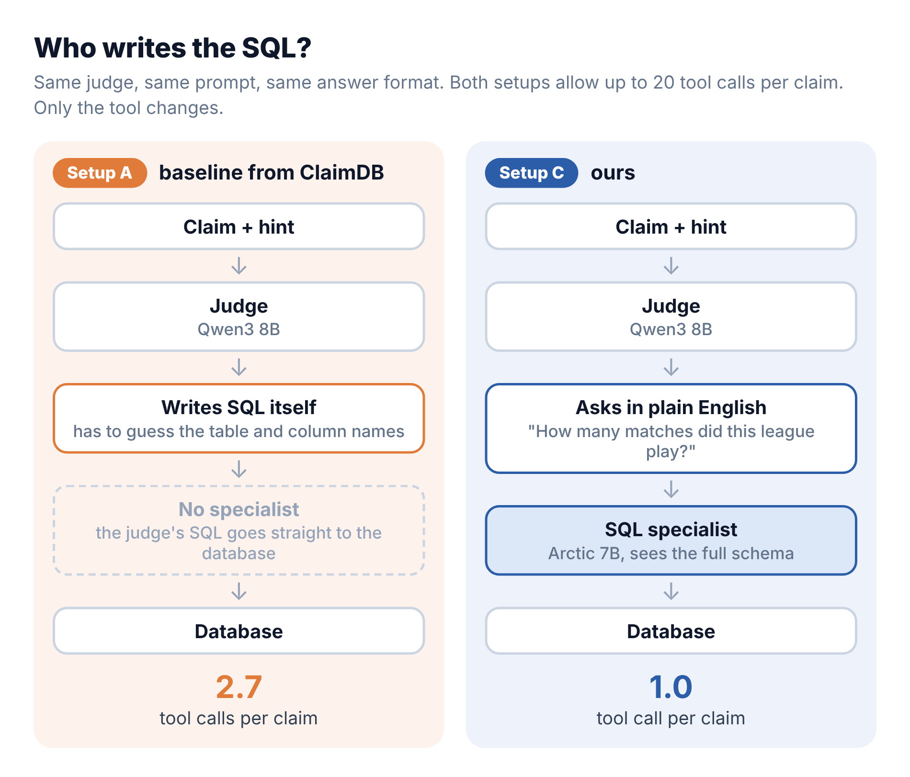
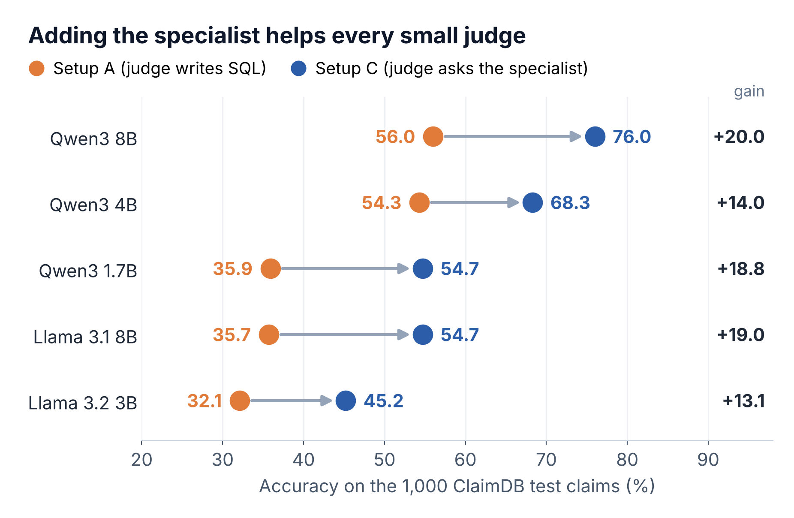
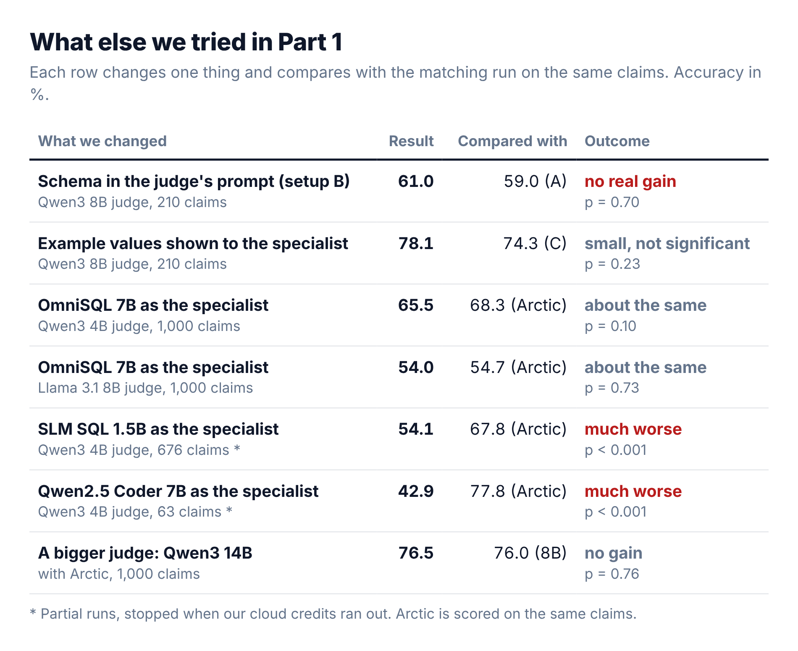
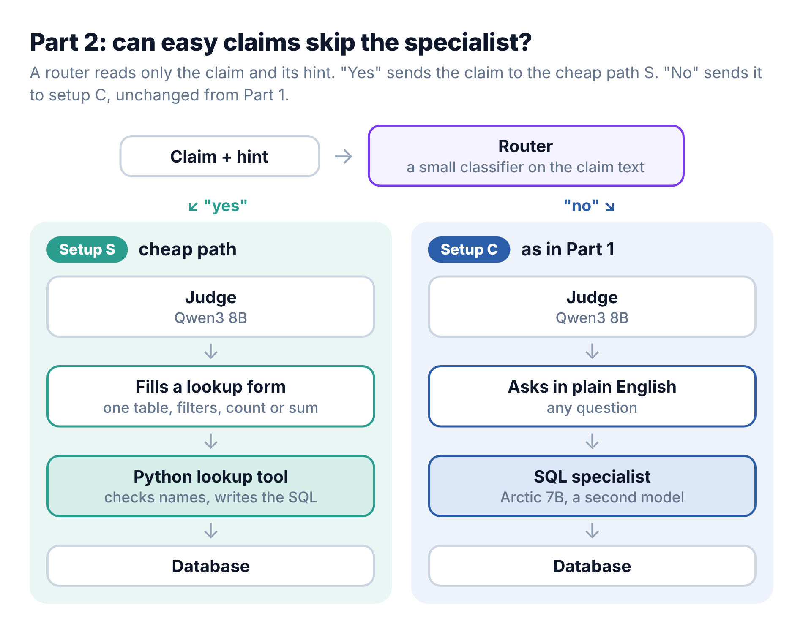
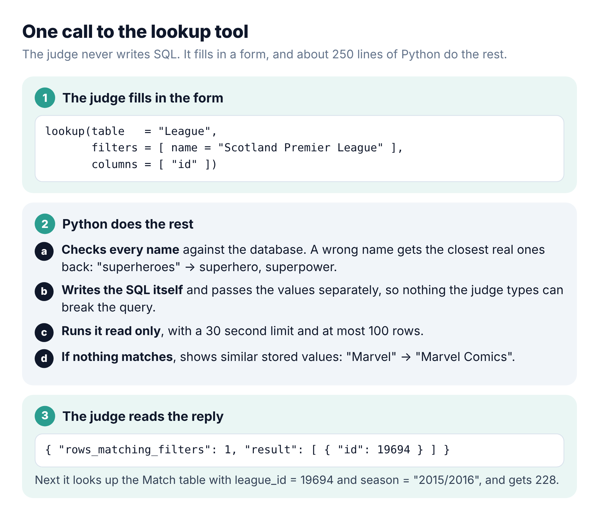
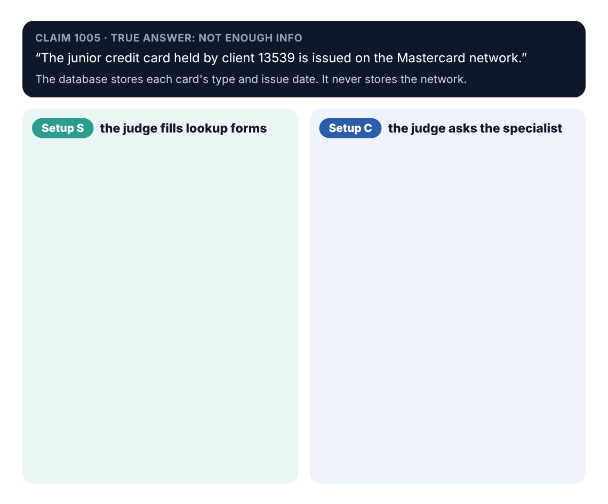
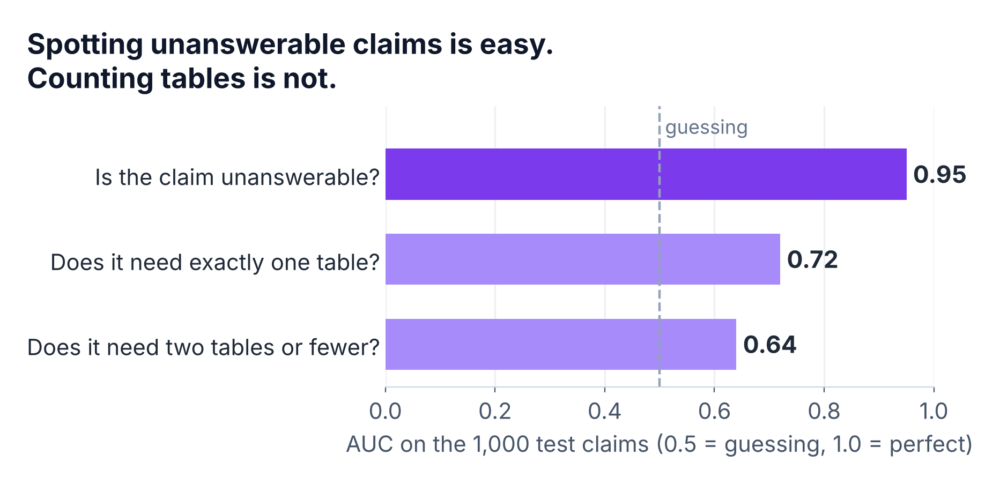
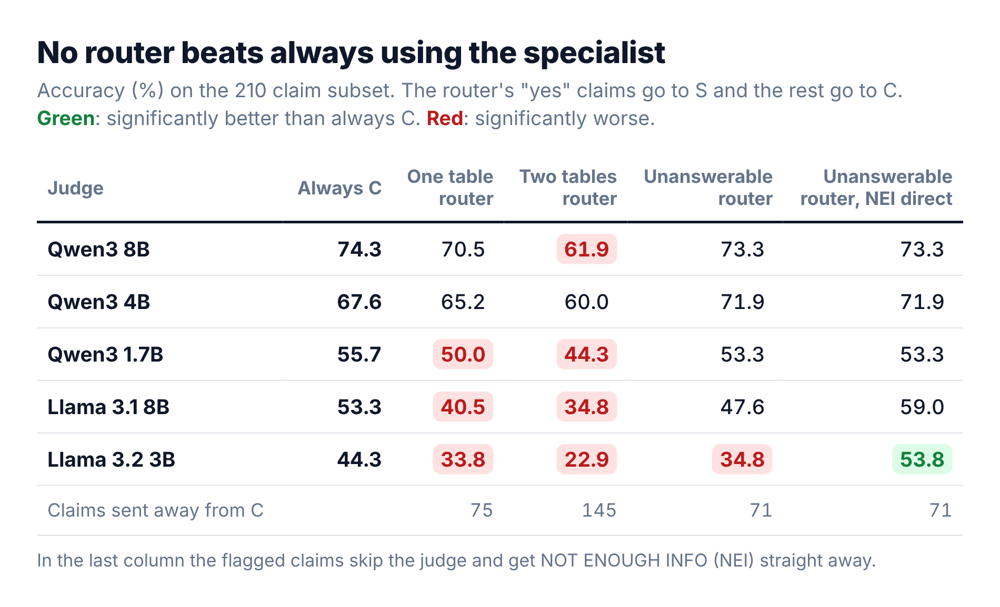

The short version. A lot of what we read is backed by a database. A sports site says a league played 228 matches last season. A dashboard says sales went up in March. Checking claims like these means querying the data, and small open models are bad at it. They keep writing SQL for tables that do not exist. So we gave a small model a helper: a 7B model trained only to write SQL, which we call the specialist. The small model asks questions in plain English and the specialist writes the queries. On the ClaimDB benchmark, this takes Qwen3 8B from 56.0% to 76.0% accuracy. That beats every open model in the ClaimDB paper and sits a few points behind GPT 5 nano. We then tried to skip the specialist on easy claims by using a small Python lookup tool. It works well on claims the database cannot answer. On simple one table claims it is not good enough yet, and that is what we are fixing now.
Fact checking usually means reading text. Many claims, though, are about numbers that live in a database. Checking them means running queries. Large language models (LLMs) can do this if you give them a tool that runs SQL. The catch is that the best results come from large commercial models. They charge per call, and you cannot run them on your own machine.
ClaimDB [1] is a recent benchmark built for exactly this task. Every claim comes with a real database, often with millions of rows. The model has to answer ENTAILED (the data supports the claim), CONTRADICTED (the data refutes it) or NOT ENOUGH INFO (the data cannot settle it). The authors tested 30 models, and 17 of them scored below 55%. Small open models did especially badly. Qwen3 8B, the model we use throughout this post, scored 52.1%.
We wanted to know why small models fail here, and whether we could fix that without making them bigger. When we read through their failed runs, the reasoning was rarely the problem. The SQL was. So we split the job in two. The small model keeps the reasoning, and a specialist model writes the queries.
The post has two parts. Part 1 is about the specialist and how much it helps five different small models. Part 2 is about making the system cheaper by skipping the specialist when a claim looks easy. Some of that worked and some of it did not, and we cover both.
We make three contributions. (1) A judge plus specialist setup that lifts every small judge we tested by 13 to 20 points on ClaimDB. (2) A Python lookup tool and three routers that decide, claim by claim, whether the specialist is needed. (3) An error analysis that shows where this cheaper path holds up and where it breaks.
A claim is a sentence about the data, such as "The Scotland Premier League featured 228 matches in the 2015/2016 season." Each claim comes with a hint that explains its domain terms. The judge is the language model that reads the claim, queries the database and gives the verdict. A tool call is one request the judge sends to its tool, for example one SQL query.
A claim is answerable when the database holds the facts needed to check it. The data then either supports it (ENTAILED) or refutes it (CONTRADICTED). A claim is unanswerable when no query on that database could settle it. The right answer is then NOT ENOUGH INFO, which we shorten to NEI. Unanswerable is not the same as false. A false claim has evidence against it. An unanswerable claim has no evidence either way. ClaimDB has three kinds of unanswerable claims:
The schema of a database is its list of tables, their columns and the way the tables link to each other. Text to SQL is the task of turning a question in plain English into a SQL query for a given schema.
Early work checked claims against small tables that fit inside the model's input. TabFact [3] is the best known example, with claims about Wikipedia tables. Real databases are far too big for that, so newer systems let an LLM query the database instead. Thucy [2] uses several cooperating LLM agents to verify claims across relational databases. ClaimDB [1] gives a single judge a SQL tool and evaluates 30 models on large databases from BIRD. Both get their best results from large models. In ClaimDB, open models with at most 14B parameters mostly land between 34% and 62%.
We keep ClaimDB's task and setup but focus on small open judges. We do not train or change the judge. We change the tool it uses, and we study when a cheaper tool is good enough.
Text to SQL has improved fast, helped by benchmarks such as BIRD [4]. Some 7B models are now trained for nothing else. Arctic Text2SQL R1 7B [5] answers 68.9% of BIRD's development questions correctly, according to its authors. OmniSQL [6] trains models of several sizes on large amounts of synthetic data. These models answer questions. They were never built to judge whether a claim is true.
We use one of them as a part inside a claim checking system. The judge decides what to ask, and the specialist only writes SQL. We also swap in specialists of different sizes to see how much the choice matters.
ReAct [7] showed that LLMs do better when they alternate between thinking and calling tools. Most later agents follow this pattern, and so does ClaimDB's judge. Usually one model does both jobs. It reasons about the task and also writes the tool input, such as the SQL.
We split those two jobs between two models. In Part 2 we go one step further and decide for each claim whether the second model is needed at all.
Take the Scotland claim from above. The answer sits in a football database with seven tables. We gave this claim to Qwen3 8B with ClaimDB's SQL tool. Its first query asked for a table called matches, which does not exist. It then listed the tables and looked inside the Match table. It found no league names there, so it gave up and said NEI. The claim is true. A single join between the League and Match tables shows 228 matches.
This was not a one off. We went through ClaimDB's released runs for 11 open models with at most 14B parameters. When a judge queried a table or column that does not exist, it got the claim right only 20.8% of the time. When all of its queries ran, it was right 43.8% of the time. Across 19 models, the more failed tool calls a model made, the lower its accuracy (correlation of −0.88). For small models, writing SQL for a database they have never seen looks like the main bottleneck.
We compare two setups (Figure 1). They use the same judge, the same prompt and the same answer format. Both allow up to 20 tool calls per claim. Only the tool is different.
Setup A is ClaimDB's own baseline. The judge gets a tool that runs any SQL query. It is not shown the schema, so it has to find the tables and columns on its own.
Setup C is ours. Here the judge's tool takes a question in plain English. We pass that question to the specialist together with the full schema and the claim's hint. The specialist writes a SQL query and we run it in read only mode. The judge then sees both the query and its result.

Figure 2 replays the Scotland claim in both setups. In setup C the judge asks one question. The specialist can see the schema, so it finds the link between the two tables by itself and returns 228. The judge compares that with the claim and answers ENTAILED.

Data. We use the claims and databases released with ClaimDB. The public test set has 1,000 claims: 333 ENTAILED, 331 CONTRADICTED and 336 NEI. They span 11 databases from BIRD's development set. Each database has 3 to 13 tables, and together they hold about 3.9 million rows. For some comparisons we use a balanced subset of 210 claims, 70 per label, picked with a fixed random seed.
Models. Our main judge is Qwen3 8B [8], the same model and version that ClaimDB used. We also test Qwen3 4B, Qwen3 1.7B, Llama 3.1 8B and Llama 3.2 3B [9], plus Qwen3 14B to check whether size helps. Our main specialist is Arctic Text2SQL R1 7B [5]. We also try OmniSQL 7B [6], SLM SQL 1.5B and Qwen2.5 Coder 7B in that role. We fine tune none of these models.
Metrics. Accuracy is the main metric, as in ClaimDB. We also report recall per label, which is the share of claims with a given gold label that the judge gets right. This matters because a judge can shift its accuracy just by saying NEI more or less often. To compare two systems on the same claims we use the McNemar test. It only looks at claims where exactly one of the two systems is right, and asks whether that split could be down to chance. We call a difference significant when p is below 0.05. We also track tool calls and seconds per claim.
Compute. All models run locally through Ollama with a context of 16,384 tokens. Most runs used a single RTX 4070 Super. The Qwen3 14B and OmniSQL runs used a cloud GPU.
Yes, by a lot. On its own, Qwen3 8B scores 56.0%, right where the other small open models sit in Figure 3. With the specialist it scores 76.0%. That is a gain of 20.0 points, with a 95% confidence interval of 16.4 to 23.5. Setup C gets 283 claims right that setup A misses, while A gets only 83 that C misses (p < 0.001). C also wins on every one of the 11 databases, by 8.9 to 34.1 points.

That puts an 8B judge ahead of every open model in the ClaimDB paper, including gpt oss 20B at 74.0%. It is a few points behind GPT 5 nano (78.7%) and Gemini 2.5 Flash (79.3%). We want to be careful with this comparison. Our harness scores the same Qwen3 8B model 3.9 points higher than ClaimDB's did (56.0% against 52.1%). Part of the distance to the grey bars may come from that difference and not from the specialist.
Where does the gain come from? Almost entirely from answerable claims. Recall on ENTAILED claims doubles, from 31.5% to 64.9%. On CONTRADICTED claims it rises from 39.3% to 80.1%. The biggest jump is on the 482 claims where setup A had queried a table or column that does not exist. On those, accuracy goes from 43.8% to 73.7%. The judge also needs fewer tool calls, about 1 per claim instead of 2.7, because it no longer has to hunt for the schema.
It holds for every judge we tried (Figure 4). The gain from A to C ranges from 13 to 20 points, and every one of them is significant. Qwen3 4B reaches 68.3%. Qwen3 1.7B and Llama 3.1 8B both reach 54.7%. A bigger judge did not help, though. Qwen3 14B with the specialist scores 76.5%, about the same as the 8B judge. Once the specialist writes the SQL, the judge's size seems to matter much less.

Table 1 lists the other variants we tried. OmniSQL 7B works about as well as Arctic in the specialist role. Smaller or general purpose models do much worse. SLM SQL 1.5B reaches 54.1%, and Qwen2.5 Coder 7B reaches 42.9% on the claims we managed to run.

Showing the judge the schema (setup B). Before we tried a specialist, we tried something simpler. We put the full schema in the judge's prompt so it would not have to guess names. Failed queries on the 210 claim subset dropped from 219 to 5. Accuracy barely moved, from 59.0% to 61.0%, which is not significant. The reason surprised us. With the schema in front of it, the judge stopped querying on 121 of the 210 claims and answered NEI on every one of them. Knowing the names was not enough. The judge still had to plan a correct query, and often it did not even try.
Example values for the specialist. We also showed the specialist three example values from each column. Accuracy went from 74.3% to 78.1% on the subset, but the difference is not significant. The claim hints already contain most of the values the specialist needs.
The price of setup C. Recall on unanswerable claims falls from 96.7% in setup A to 83.0% in setup C. The specialist always returns some query and some result, even for a question the database cannot answer. The judge then treats that result as evidence. Figure 7 in Part 2 shows an example.
Setup C runs a second 7B model on every claim. Yet many claims look simple. They need one table and one count or comparison. Could a lighter path handle those without the specialist? That needs two new pieces (Figure 5). The first is setup S, a cheap path built around a Python lookup tool. The second is a router that decides, claim by claim, whether to use setup S or setup C.

In setup S the judge never writes SQL. It fills in a fixed lookup form. The form names one table, a list of filters, and optionally a count, sum, average, minimum or maximum. About 250 lines of Python turn the form into a safe query (Figure 6). The tool works in four steps. (1) It checks every table and column name against the real database. (2) It writes the SQL itself and passes the values separately. (3) It runs the query in read only mode. (4) It returns the matching rows and how many there were.
The tool also tries to help when something goes wrong. If a name is wrong, it replies with the closest real names. Asking for "superheroes" returns "superhero" and "superpower". If a filter matches nothing, it shows stored values that look similar, so a search for "Marvel" points to "Marvel Comics". Everything else stays the same as in setups A and C, including the prompt, the answer format and the cap of 20 tool calls.

Figure 7 shows a case where the simple tool beats the specialist. Claim 1005 says that a client's junior credit card runs on the Mastercard network. The database stores card types and issue dates but not the network. In setup C, the judge asked the specialist which network the card uses. The specialist could not answer that, so it quietly answered a different question. It filtered for cards of type "credit" and got nothing back. The judge read the empty result as evidence against the claim and said CONTRADICTED. In setup S, the judge found the client's card in two lookups. It could see that the card exists and that no column stores a network. It answered NEI, which is correct.

The router is a small and fast classifier. It turns the claim and its hint into a vector of 768 numbers using a fixed embedding model (nomic embed text). A logistic regression then predicts "yes" or "no". We also tried small neural networks with one and two hidden layers, but they never did better. We trained three routers, and each one answers a different question:
To train them, we labelled 40,652 claims from ClaimDB's training split. The table labels come from the reference SQL query behind each claim. The unanswerable label comes from the gold verdict. We picked each decision threshold on 7 more held out databases. Then we tested on the 1,000 test claims, whose 11 databases the routers never saw. At test time a router sees only the claim and its hint.

The unanswerable router is very good at its job (Figure 8). Its AUC is 0.95, where 0.5 means guessing and 1.0 means perfect. Unanswerable claims often give themselves away through their wording, like "If..." or "the most aesthetically pleasing". The two routers that count tables are much weaker, with AUC 0.72 and 0.64.
Across all 1,000 claims, setup S with Qwen3 8B scores 61.8%. That beats setup A (56.0%, p < 0.001) but is far below setup C (76.0%). Figure 9 runs every judge through every setup on the 210 claim subset. For the Qwen judges, S is level with A or better. Qwen3 4B gains the most, from 51.4% to 62.4%. The Llama judges are a different story. They often could not fill in the form correctly. Llama 3.1 8B ended 81 of the 210 claims without a verdict, and Llama 3.2 3B ended 104. Most of these runs stopped because the judge sent a malformed form twice in a row.

Figure 10 looks at Qwen3 8B on all 1,000 claims. The unanswerable router sends 340 claims to S. On those 340, S and C are about equally accurate (84.4% against 82.9%, not significant). S is also 31% faster, at 19.1 seconds per claim against 27.8. The average hides an uneven split, though. On the 282 claims that really are unanswerable, S is clearly better (94.0% against 85.1%). On the 58 answerable claims the router sent by mistake, C is clearly better (72.4% against 37.9%).

Table 2 shows the full routing results on the 210 claim subset. No router is significantly better than simply always using setup C. The unanswerable router keeps the Qwen judges close to C. Qwen3 4B even goes up, from 67.6% to 71.9%, though that is not significant on 210 claims. The one table and two table routers lower accuracy, often significantly.

The last column of Table 2 tests an even simpler rule. When the unanswerable router says "yes", we skip the judge and answer NEI directly. This helps the weakest judges the most. Llama 3.2 3B rises from 44.3% to 53.8% (p = 0.002). On all 1,000 claims, the same rule lifts Qwen3 4B from 68.3% to 72.1% and the two Llama judges by 8 and 11 points. We report this with some caution. For those claims the router makes the call instead of the judge. The router also leans on the way ClaimDB happens to word its unanswerable claims.
Routing by table count. We expected S to shine on claims that need just one table, since one lookup should be enough. On the 215 claims that truly need one table, S scored 74.9% and C scored 76.7%. That is a tie, and S is a third faster. The trouble is the router. It only sees the claim's text, but the number of tables depends on how the database is organised. The same sentence can need one table in one database and a join in another. On the 210 claim subset, the one table router sent 75 claims to S, and only 41 of them truly needed one table. The two table router also sends claims that need a join, and S cannot join tables in one call.
S on one table claims. We read all 54 one table claims that S got wrong (Figure 11). In 30 of them, the judge fetched data and then made the wrong ENTAILED or CONTRADICTED call. Three gaps explain most of these. (1) The lookup tool has no date functions. (2) It cannot compute percentages. (3) The judge sometimes picks the wrong column. Take the claim "236 users created their accounts after 2013". Checking it needs the year of each account's creation date. The form compared the whole date with 2013, so S counted 3,278 users and said CONTRADICTED. In 9 other cases, the judge never made a lookup at all and just answered NEI.

Speed. S was supposed to save time by dropping the specialist. Over all 1,000 claims, it saved only 1.8 seconds per claim (27.2 against 29.0 seconds). Most of the time goes into the judge's own reasoning, not into the specialist. The savings only get large on claims that S settles in one or two lookups.
The results point to a clear plan (Figure 12). Setup C stays as it is, because it works. The cheap path needs two fixes, and we are tackling them in order.
Phase 1: make S reliable on one table claims. For now we take the router out of the picture and send S only the claims that truly need one table. The goal is at least 90% accuracy on these, up from 74.9% today. We will tune the lookup tool on one table claims from ClaimDB's training split, which has 8,053 of them. The final version gets scored once on the 215 test claims, so the test set does not shape the tool. The changes come straight from the error analysis. (1) A year filter. (2) A percentage option. (3) A first reply that shows every column with a few example values. (4) A prompt rule that the judge must look before answering NEI.
Phase 2: a router that sends S the right claims. Today's routers only see the claim text. We plan to fine tune a small language model as the router and give it the database schema as extra input. The schema is what tells you how many tables a claim needs. We will train it on the 46,486 labelled training claims. If it works, S gets the claims it can handle, and the whole system gets faster without losing accuracy.

We test on one benchmark, and its claims come from BIRD questions. Our specialist was also trained on BIRD style data, which may work in its favour. The commercial model numbers come from ClaimDB's runs, not ours, and use a different harness. We ran each setup once, so we cannot report variation across runs. Some comparisons use the 210 claim subset, which limits statistical power. Two specialist runs are partial because our cloud credits ran out. Finally, the unanswerable router may rely on how ClaimDB phrases its unanswerable claims, and may not carry over to other data.
We started with a simple observation. Small models fail at checking database claims mostly because they write bad SQL, not because they reason badly. Handing the SQL to a 7B specialist fixes much of that. It takes an 8B judge from 56.0% to 76.0% on ClaimDB, a few points behind GPT 5 nano, with everything running on one consumer GPU. The specialist is not needed everywhere, though. On claims the database cannot answer, a plain Python lookup tool is just as accurate and faster. Making that tool reliable on simple claims, and learning which claims to send it, is what we are working on now.
Code and results: github.com/Kushagra-Agnihotri/claimdb-specialist-sql. All result files, router outputs and figure scripts are in the Kanishk/ folder.
Team: Kushagra Agnihotri, Kanishk Didwania and Navtej Sai Singh Dua, mentored by Prof. Dhruv Kumar, Dr. Krishna Garg and Dr. Chirag Chhablani. Course: [course name and code], BITS Pilani.
AI use: We used Claude to help write code, analyse results and edit the language of this post. We checked every number against our result files.
Thanks to the ClaimDB authors for releasing their benchmark, code and model runs.